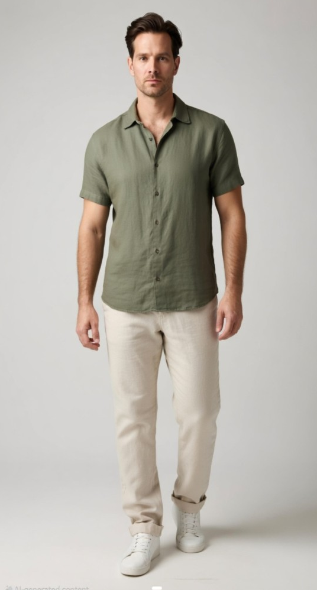
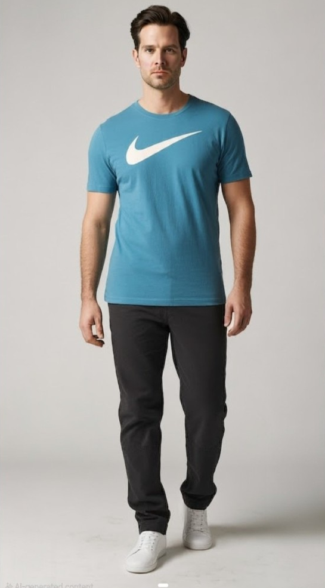

FashionMate

Style Match
98%
AI-powered fashion intelligence
FashionMate turns your wardrobe, photos, and preferences into smarter outfit ideas, instant style feedback, and realistic virtual try-ons.

Personal AI wardrobe
Current working FashionMate features cover the full styling loop: profile setup, digital closet, outfit generation, Jenny AI, StyleLenz, virtual try-on, and a gallery of saved AI looks.
Jenny AI answers fashion questions through chat and voice, understands your profile context, and can return outfit recommendations directly in the conversation.
Upload garment photos and FashionMate organizes them with AI-generated details like category, color, pattern, formality, and occasion fit.


Select a saved full-body photo, combine it with recommended garments, and generate an AI preview of how the outfit looks on you.


Choose occasion, weather, time of day, and vibe to receive ranked outfit combinations from your wardrobe.
Upload or capture an outfit photo for a style score, rubric, improvement tips, skin tone notes, and color suggestions.
Save age, height, body type, style DNA, fit preferences, occasion bias, face images, and full-body images.
Ready to define your signature style?
Start with your profile, add your wardrobe, ask Jenny for styling help, and preview the final look with FashionMate virtual try-on.